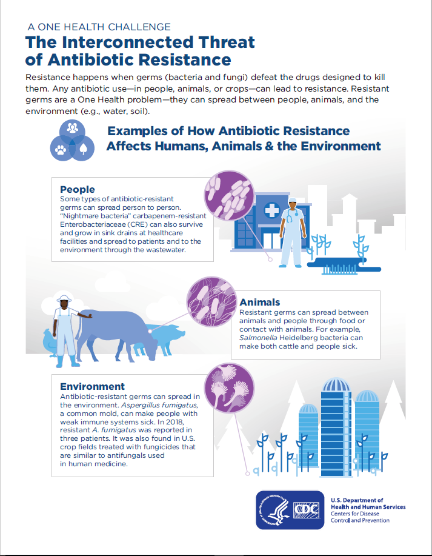

ANTIBIOTIC RESISTANCE
Antibiotic resistance is when antibiotics that are designed to kill certain bacteria become resistance to the bacteria.
What causes antibiotic resistance
click here to learn more on how antibiotics happens
- Careless use of antibiotics
- Patient not finishing the course of medicine
- Farmers add antibiotics in the animals food so that they should gain weight
Measure to avoid antibiotic resistance
The following is the numbered list
- Patient should be finishing the course of medicine
- Barn the use of antibiotics in farms as animal food additives
Resistance Mechanisms of the some antibiotics